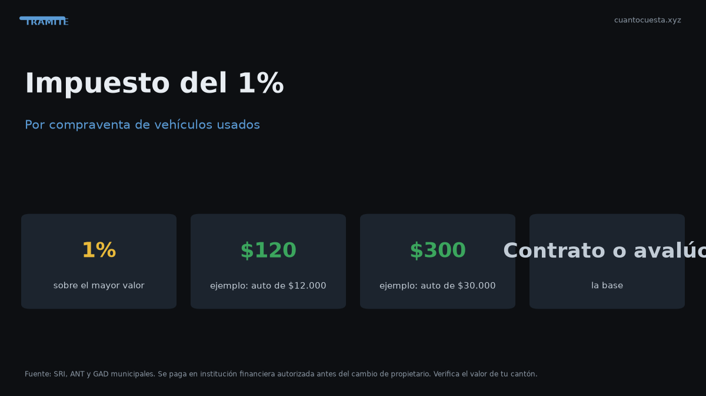

Impuesto del 1% por compraventa de vehículos usados en Ecuador
El impuesto por compraventa de vehículos usados en Ecuador es el 1% sobre el mayor valor entre contrato y avalúo del SRI. Cómo se calcula y dónde se paga.

El impuesto por la compraventa de un vehículo usado en Ecuador es del 1% y se calcula sobre el mayor valor entre el precio del contrato y el avalúo del SRI. En un auto de $12.000 con avalúo de $10.500, se pagan $120. Si el avalúo fuera mayor que el contrato, pagarías sobre el avalúo.
Este es el impuesto que más confusión genera: no se paga en el SRI ni en la notaría, sino en una institución financiera autorizada, y es un paso obligatorio del traspaso de dominio.
Cómo se calcula
La fórmula es directa:
Base = el MAYOR entre (precio del contrato) y (avalúo del SRI)
Impuesto = Base × 1%
No es el 1% del precio que pagaste, ni el 1% del avalúo por separado: es el 1% del que sea mayor.
El SRI no acepta que declares un contrato por debajo del avalúo para pagar menos. Si el contrato es menor, el impuesto se calcula igual sobre el avalúo registrado.
Sobre qué base se paga
Aquí está el punto que más sorprende a los compradores:
- Si el contrato es mayor que el avalúo, manda el contrato.
- Si el avalúo es mayor que el contrato, manda el avalúo.
- El avalúo que cuenta es el registrado en el SRI, no el precio de mercado.
Por eso comprar barato no reduce el impuesto. El avalúo del SRI se deprecia 20% anual con un piso del 10% del PVP original, así que un vehículo con varios años puede seguir teniendo un avalúo alto frente al precio negociado.
Dónde se paga
El impuesto del 1% no se paga en la notaría. Se paga en una institución financiera autorizada, que emite el comprobante. Ese comprobante es el que habilita la solicitud de cambio de propietario ante la ANT o el GAD.
El orden correcto es:
- Reconocer firmas del contrato ante notario.
- Pagar el 1% en la institución financiera autorizada.
- Solicitar el registro del cambio de propietario en ANT o GAD.
- Emitir la nueva especie de matrícula.
Tres ejemplos con precios distintos
| Contrato | Avalúo SRI | Base usada | Impuesto (1%) |
|---|---|---|---|
| $8.000 | $8.000 | $8.000 | $80,00 |
| $12.000 | $10.500 | $12.000 | $120,00 |
| $12.000 | $14.000 | $14.000 | $140,00 |
Ejemplo 1: contrato y avalúo iguales. Se paga el 1% de $8.000 = $80,00.
Ejemplo 2: contrato mayor que el avalúo. Manda el contrato: 1% de $12.000 = $120,00.
Ejemplo 3: avalúo mayor que el contrato. Manda el avalúo: 1% de $14.000 = $140,00.
Compara siempre el precio del contrato con el avalúo antes de firmar. Si el avalúo es más alto, presupuesta el impuesto sobre el avalúo, no sobre lo que negociaste.
Qué pasa si declaras menos del avalúo
Si en el contrato declaras un precio menor al avalúo del SRI, no pagas menos. La base sigue siendo el avalúo, porque se usa el mayor de los dos valores.
Consecuencias prácticas:
- El impuesto se calcula sobre el avalúo y pagas igual o más de lo esperado.
- Declarar un valor por debajo del avalúo no reduce el costo del traspaso.
- El avalúo del SRI es el dato de control: se consulta por placa.
Costos totales del traspaso (para presupuestar)
| Concepto | Costo referencial |
|---|---|
| Impuesto del 1% | 1% del mayor valor |
| Nueva especie de matrícula | $25,00 |
| Transferencia de dominio (servicio) | $10,00 |
| Certificado Único Vehicular (si lo pides) | $7,50 |
| Honorarios de notaría | Variable |
| Trámite ANT/GAD | Variable |
Quién paga y cuándo
El impuesto lo paga quien adquiere el vehículo: es un requisito previo al registro del cambio de propietario. Sin el comprobante de pago, la solicitud ante la ANT o el GAD no prospera.
Se paga después de la notaría y antes del registro: esa ubicación en el proceso explica por qué, si te saltas este paso, todo se detiene.
Por qué manda el avalúo y no el precio
El avalúo del SRI es un valor administrativo, no de mercado. Se deprecia 20% anual y tiene un piso del 10% del PVP original: nunca cae por debajo de ese porcentaje, por más años que tenga el vehículo.
Consecuencia: un auto usado con varios años puede tener un avalúo alto en relación a su precio negociado. En ese caso, el impuesto del 1% se calcula sobre el avalúo, no sobre el precio del contrato.
Preguntas frecuentes
¿Cuánto es el impuesto? El 1% sobre el mayor entre el precio del contrato y el avalúo del SRI.
¿Dónde se paga? En una institución financiera autorizada. No se paga en la notaría ni en el SRI.
¿Puedo pagar menos declarando un contrato bajo? No: manda el avalúo si es mayor.
¿Se paga además de la matrícula? Sí, es un trámite distinto: la matrícula es anual y este impuesto se paga cuando cambia el propietario.
¿Qué necesito llevar al pago? Los datos del vehículo y del contrato legalizado; confirma los documentos exactos en la entidad.
Resumen práctico
- El impuesto de compraventa es del 1% sobre el mayor entre contrato y avalúo del SRI.
- Auto de $12.000 con avalúo de $10.500 → $120 de impuesto.
- Se paga en una institución financiera autorizada, no en la notaría.
- Declarar menos del avalúo no reduce el impuesto: manda el avalúo.
- Es uno de los 4 pasos del traspaso, antes de registrar el cambio de propietario en ANT o GAD.
Los montos son referenciales para 2026 y pueden variar. Confirma el avalúo y las tasas vigentes en el SRI y la ANT antes de pagar.
Sigue leyendo
Calendario de matriculación en Ecuador: qué mes te toca según tu placa
La matrícula se paga según el último dígito de tu placa. Revisa qué mes te corresponde, la mult
Cambio de características del vehículo en Ecuador: color, motor y carrocería
Cambiar el color, el motor o la carrocería de tu auto exige declararlo en la ANT: cuándo es obl
Certificado Único Vehicular (CUV) en Ecuador: qué es y cómo obtenerlo
El Certificado Único Vehicular (CUV) cuesta $7,50 en Ecuador. Qué información contiene, cuándo
Cómo hacer el traspaso de dominio de un vehículo en Ecuador (paso a paso)
Traspaso de dominio en Ecuador paso a paso: los 4 pasos ante notaría y ANT, el impuesto del 1%
Duplicado de matrícula y placas en Ecuador: qué hacer si las pierdes
Perdiste o te robaron las placas: pasos, denuncia, requisitos, costos ($23 placas, $25 especie,
Cómo usamos estos datos
Las cifras de esta guía provienen de fuentes públicas oficiales y tarifarios de concesionarios publicados. Los valores son referenciales: tasas municipales, promociones y precios de repuestos varían. Verifica siempre en la entidad o concesionario antes de decidir.